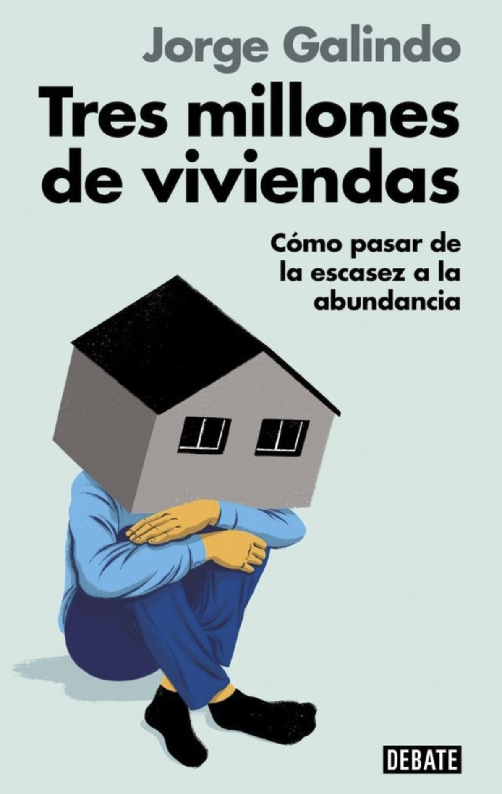

// abans del 2007
Sota la Llei del Sòl de 1998, tot el que no estigués expressament protegit com a rústic o agrícola podia declarar-se urbanitzable.

01 per què no construïm
Bloquejos de sòl a sostre.
En la darrera dècada i mitja Espanya ha deixat de construir. Per què?
A Espanya, l'ús de cada parcel·la el fixa el municipi mitjançant un document mestre: el Pla General (PGOU), on l'ajuntament classifica cada solar com a urbanitzable o no. El 2007, el default va canviar.
// abans del 2007
Sota la Llei del Sòl de 1998, tot el que no estigués expressament protegit com a rústic o agrícola podia declarar-se urbanitzable.
// després del 2007
El sòl s'ha de justificar expressament com a necessari perquè es pugui reclassificar com a urbanitzable.
La intuïció era raonable —refredar el sprawl especulatiu que havia alimentat la bombolla de principis dels 2000—, però en el moment en què combines una porta d'entrada més estricta amb un munt de paperassa per travessar-la, converteixes un filtre sensat en un coll d'ampolla. Treure al mercat un sol solar es converteix en un exercici de diversos anys.
// i després es van apilar les capes
Entre 2010 i 2019, capa rere capa es van apilar a sobre. L'exemple més clar és la Llei d'Avaluació Ambiental de 2013, que va estendre els casos sotmesos a «avaluació ambiental estratègica». Gairebé qualsevol modificació no trivial d'un Pla General requereix ara quatre procediments en paral·lel:
// a
Procediment ambiental paral·lel, amb la seva pròpia consulta pública.
// b
Estudi ambiental detallat de la zona.
// c
Declaració ambiental final, emesa per una administració diferent.
// d
Seguiment posterior un cop aprovat.
Cada pas té el seu propi cronòmetre; qualsevol d'ells pot aturar el rellotge. A sobre, les comunitats autònomes hi van apilar les seves: estudis d'integració paisatgística a València, avaluacions d'impacte en la salut a Andalusia, informes de sostenibilitat econòmica gairebé pertot. El mateix Director General d'Urbanisme d'Andalusia estima que calen al voltant de 100 informes sectorials per tramitar un nou Pla General.
I aquestes capes no afecten només la fase u —reclassificar el sòl—. També peguen a la fase dos: el Pla Parcial, el document de projecte que, un cop el sòl és urbanitzable, defineix exactament on aniran carrers, parcel·les, densitats i dotacions.
// i dos amplificadors legals
Dos mecanismes jurídics multipliquen la fricció:
// silenci administratiu negatiu
En urbanisme, si l'Administració no respon dins del termini legal, la sol·licitud es considera denegada. La inacció burocràtica equival a un «no».
// proliferació de punts de vet
Qualsevol veí, associació o administració superior implicada en algun d'aquests informes pot recórrer, i una impugnació amb èxit acostuma a anul·lar el procediment sencer, no només el punt qüestionat. Els actors NIMBY no necessiten guanyar en el fons, només endarrerir.
Anem-ho a veure al peu del terreny.
// marc
Un Pla General és la norma que determina aquest primer pas: quin sòl és urbanitzable i quin no. Prenguem Madrid, ciutat en expansió. Continua governada pel Pla General de 1997.
Renovar el de Madrid fa dècades que s'intenta. Mentrestant, tot el nou s'esmuny per modificacions puntuals i plans parcials que triguen anys en cada pas.
// sectors anul·lats
El 28 de setembre de 2012, el Tribunal Suprem va anul·lar 22 sectors del Pla. De cop, fins a 135.000 habitatges previstos van quedar en l'aire per defectes formals en la tramitació.
El 2016 el Suprem va salvar 21 dels 22 després de la revisió de l'Ajuntament. Però entre sentència i rescat van passar quatre anys en què aquells sòls no es podien tocar.
BBVA Research calcula que dues terceres parts dels Plans vigents a Espanya són anteriors a 2008. Hi ha embús urbanístic.
// operació campament
Però fins i tot quan no cal mobilitzar sòl nou amb el Pla General, la fase següent s'embussa. 211 hectàrees al sud-oest de Madrid. 10.700 habitatges, el 65 % protegits. El primer conveni entre Defensa, Comunitat i Ajuntament es va signar el 6 de juny de 1989. És a dir: ja estava incorporat al Pla General de 1997. Però calia adquirir els sòls de Defensa i desenvolupar un Pla Parcial: el que determina l'aspecte concret d'aquell nou barri.
Defensa va cobrar el primer termini el 2011. El Pla Parcial va caure amb la sentència de 2012. SEPES va comprar formalment el sòl l'octubre de 2023. El projecte d'urbanització es va aprovar inicialment el 27 de febrer de 2025. Els primers habitatges no hi seran abans de 2027-2028: gairebé quatre dècades des del conveni.
// cotxeres de Cuatro Caminos
Un altre exemple més petit i recent. Antonio Palacios i Miguel Otamendi van projectar el 1917 les cotxeres del Metro de Madrid a Cuatro Caminos. El primer comboi de la Línia 1 va sortir d'allà el 17 d'octubre de 1919.
El 2014, sota Botella, es va aprovar un pla per substituir les cotxeres per 443 habitatges. La cooperativa adjudicatària va enderrocar l'edifici entre març i juny de 2021, malgrat els recursos pendents. El TSJM va anul·lar el pla el 9 de maig de 2025. El Suprem ho va confirmar l'11 de febrer de 2026. El solar continua buit.
// la corona
Sortim de la capital. La pressió sobre l'habitatge no l'assumeix només Madrid: s'hauria de repartir amb els municipis de la seva corona metropolitana. No ho fa.
Onze alcaldes de la corona —entre ells Alcorcón, Fuenlabrada o Getafe— han presentat una iniciativa legislativa municipal per forçar la declaració de zones de mercat tensionat. Mentrestant, diversos desenvolupaments porten dues dècades a la cartera sense moure's.
Ningú no vol assumir el nou habitatge: que l'assumeixi el veí. El problema: a Espanya hi ha més de 8.000 municipis. Hi ha molts «veïns».
// rivas-vaciamadrid
Rivas-Vaciamadrid va presentar el 5 de juny de 2025 l'avenç del seu nou Pla General. El model declarat: consolidar el teixit urbà existent. L'etiqueta oficial: «Rivas serà la Casa de Campo del Sud-est».
Sobre els plànols: −46 % d'edificabilitat al barri Cristo de Rivas i l'eliminació d'uns 3.000 habitatges previstos a Mirador Sur. Fa anys Rivas ja va paralitzar llicències d'obra per falta de serveis bàsics. La pressió per més habitatge assequible per a joves xoca amb el límit que el mateix municipi s'autoimposa.
// majadahonda
Majadahonda, nord-oest metropolità, govern municipal del PP. El sector Arroyo del Arcipreste —363.000 m², 620 habitatges previstos, 286 protegits— porta demanant la seva urbanització des de 2004.
Vint anys parat. Sense sentència que el bloquegi, sense col·lector pendent, sense recurs judicial. L'aprovació inicial va arribar finalment el 29 de maig de 2025. Dos sectors més —Huerto del Parrito i Valles de la Mina, 1.257 habitatges més— es van aprovar poc després. Vint anys no eren entrebancs tècnics, només voluntat política.
// cloenda
Res d'això no és exclusiu de Madrid.
I per descomptat també implica la societat civil… orientada cap al no.
Casos en altres ciutats
L'embús urbanístic en xifres
Fins i tot amb el sòl i el pla en regla, aixecar un edifici d'habitatges.
// projecte-tipus
L'edifici que es podria aixecar en una zona de franca expansió i sòl disponible: a l'est de la capital, sota l'aeroport de Barajas. Allà els límits de servitud aèria existeixen, però són de 45 metres, suficients per a 13 plantes. Però estem construint per sota. Per què?
A partir d'aquí, sobre aquest mateix edifici, s'activen les restriccions.
// alçada
A l'oest de Barajas la servitud aeronàutica d'AESA (Agència Estatal de Seguretat Aèria) permet fins a 45 metres sense autorització prèvia.
No obstant això, els desenvolupaments recents de l'entorn —Sanchinarro, Las Tablas, Valdebebas— s'han quedat al voltant de sis plantes, uns 19 metres. Per què? Perquè les normes zonals del PGOU i els plans parcials de cada PAU (els grans desenvolupaments planificats del PGOU del 97, equiparables a un Pla Parcial) ho van fixar així. On hi havia marge aeri i de sòl, es va pactar construir per sota.
// envolupant i CTE
El Codi Tècnic de l'Edificació vigent — última gran revisió al Reial Decret 732/2019, en vigor des de setembre de 2020 — exigeix envolupants més gruixudes, aerotèrmia o equivalents per a l'aigua calenta, fotovoltaica obligatòria a la coberta i demanda gairebé nul·la. Tot això alhora.
Hi ha un nou projecte de Reial Decret en tramitació per transposar la directiva europea d'eficiència energètica. El Col·legi d'Aparelladors de Madrid el xifra en 18.000 euros més per habitatge. El Ministeri d'Habitatge ho nega.
// xarxa elèctrica
Baixem al carrer. Perquè l'edifici funcioni, cal connectar-lo a la xarxa de baixa tensió. Que un projecte avanci depèn que la distribuïdora confirmi capacitat ferma al seu node.
El 2024, segons BBVA Research, el 88 % dels nodes de distribució estava saturat. El sector urbanístic va sol·licitar 6,7 GW d'accés a la xarxa i la majoria no es van poder atendre. La Comunitat de Madrid denuncia que 116.000 habitatges previstos als desenvolupaments del sud-est han quedat fora del pla elèctric estatal 2025-2030.
Fins a això pot trigar el camí del sòl urbanitzable al lliurament de claus en un nou barri.
// tot es converteix en temps
Cadascun dels bloquejos anteriors —el sòl, el pla, les restriccions del projecte— té una traducció molt concreta: temps. Anem-lo a sumar, fase a fase, amb la seva font al costat.
// pla general
Aprovar un nou Pla General d'Ordenació Urbana porta a Espanya entre 10 i 12 anys. Ho reconeix la mateixa Comunitat de Madrid en presentar el seu Pla de Xoc d'Habitatge 2026-2027 (Idealista, set 2025).
La Llei de Mesures Urgents aprovada l'abril de 2026 prometia baixar aquest termini a sis anys. Queda per veure (Comunitat de Madrid, 22 abr 2026).
// pla parcial i urbanització
Un cop classificat el sòl com a urbanitzable, aprovar el pla parcial juntament amb la reparcel·lació i les obres d'urbanització triga entre 3 i 7 anys addicionals (APCE; llibre, p. 89).
Operació Campament es va signar el 1989 i encara no té habitatges lliurats; Los Berrocales acumula vint anys des del seu Pla Parcial original; El Cañaveral va lliurar els primers habitatges el 2016, tretze anys després d'iniciar-se la tramitació. Madrid Nuevo Norte, considerat «termini rècord», va trigar sis anys i mig entre aprovació inicial i desestimació dels últims recursos (Idealista, mai 2025).
// llicència
El termini legal per resoldre una llicència d'obra major és de tres mesos. Cap gran ajuntament no el compleix (ASPRIMA). L'estudi EY/ASPRIMA va xifrar el retard mitjà en dotze mesos i el sobrecost per al comprador en ~13.000 € per habitatge (EY, mai 2020).
El rang va des d'uns sis mesos en municipis petits fins a vint-i-quatre mesos a Madrid capital (Idealista, mai 2025).
// construcció i lliurament
Construir un edifici residencial típic des de la llicència fins al lliurament de claus: entre 18 i 30 mesos. La promoció de Neinor a Esplugues, anunciada el 2025, calcula 29 mesos fins a l'abril de 2028 (Observatorio Inmobiliario, 2025).
Si tot ha anat bé fins aquí.
// cloenda del mòdul temps
Des que un ajuntament decideix planejar un sòl fins que una família entra en un nou barri que no estava planejat: fins a 20 anys.
// temps + regulació
Cada any afegit al procés és cost financer, risc que el projecte no surti i oportunitat que canviïn les regles. Sumats, el temps i la regulació són la major part del cost d'aixecar un habitatge nou a Espanya: pesen tant com la resta de factors junts.
// crèdit
L'estoc de crèdit a construcció i promoció va caure de 452.000 milions el 2008 a 100.000 el 2019. Les caixes d'estalvi, on es coïa bona part del finançament immobiliari, van desaparèixer. La regulació bancària internacional va encarir el risc immobiliari als balanços.
Recolzar la nova construcció no resulta apetitós per a la banca (Banco de España; llibre, pp. 80–83).
// mà d'obra
La patronal de la construcció estima que falten 700.000 treballadors per cobrir les necessitats del sector a Espanya, obra pública i privada (Cinco Días, 4 nov 2024).
L'edat mitjana ha passat de 37 anys el 2007 a 45 el 2022; entre els paletes, 48. Només el 10 % té menys de 30 —era el 25 % el 2008— i el 75 % dels directius assenyala l'escassetat de mà d'obra qualificada com a principal obstacle dels seus projectes (BBVA Research; llibre, p. 95).
// materials
Entre 2018 i març de 2024, l'INE va registrar pujades del 50 % en ciment i ceràmica, 50–60 % en bituminosos, gairebé 50 % en energia i més del 30 % en coure (INE, índexs de preus de materials; llibre, pp. 96–97).
Espanya gairebé no té habitatge industrialitzat que esmorteeixi aquests salts: el pes és marginal davant Suècia o el Japó.
// productivitat
Des de 2013, la productivitat laboral en construcció —VAB per hora treballada— ha caigut més del 20 %; en el conjunt de l'economia ha crescut un 5 % (BBVA Research; llibre, p. 96).
El sector està atomitzat en microempreses. Les constructores espanyoles grans operen ja un 80 % de la seva activitat fora d'Espanya (llibre, p. 96).
// l'escletxa
Suma-ho tot i els costos superen el preu al qual es pot vendre. Construir habitatge nou a Espanya no surt rendible.
I per les mateixes raons —costos, mà d'obra, crèdit, regulació, fricció—, tampoc no surt rendible construir habitatge públic, que ven per sota de mercat. Sigui qui sigui qui construeixi.
02 les conseqüències
Per veure els efectes d'aquest bloqueig, una mesura estàndard: quants habitatges s'acaben per cada nova llar creada. Si la ratio es queda al voltant d'1, l'oferta cobreix la demanda. Si és menor, anem per darrere.
espanya · agregada per període intercensal · una ratio d'1 seria l'equilibri
font: ine (censos i estadística contínua de llars) i ministeri d'habitatge · elaboració esadeecpol.
Durant les quatre dècades que cobreixen els censos de l'INE, la ratio rarament va baixar d'aquesta línia de l'1. El boom dels 2000 ens va deixar mal acostumats a ratios per sobre d'1,5. Però des de 2021 estem a 0,38: per cada nova llar, acabem una mica menys de quatre habitatges de cada deu.
Quan l'oferta no cobreix la demanda, els preus reaccionen. Entre 2015 i 2023 el preu mitjà del metre quadrat en venda a Espanya va pujar un 47 %. Els salaris només van créixer un 17 %. Per als de 25 a 34 anys — l'edat a la qual es forma la immensa majoria de llars — els salaris van augmentar amb prou feines una mica més: un 23 %. L'escletxa és més gran a Madrid, Catalunya o les Balears, allà on hi ha ciutats on l'habitatge és un actiu més desitjat.
Les noves llars no accedeixen a la propietat. Entre els menors de 35, el percentatge de propietaris ha caigut del 67 % el 2002 al 32 % avui. Els de 65 a 74, mentrestant, continuen on eren: al voltant del 84 %.
edat de la persona de referència · enquesta financera de les famílies (banc d'espanya)
font: barceló i crespo, «la tinença d'habitatge i deute hipotecari de les famílies espanyoles en els últims vint anys», esadeecpol, 2025 · a partir de l'eff, banc d'espanya. valors aproximats a partir del gràfic publicat.
Els qui no compren, lloguen. Segons el Banc d'Espanya, el 2007 el 32,2 % de les llars joves (amb persona de referència menor de 30) vivia de lloguer. El 2023 era el 56,6 %: més de 20 punts en setze anys. I no és una cosa exclusiva dels joves: segons l'ECV de l'INE, el 2008 vivien de lloguer unes 1,6 milions de llars a Espanya; el 2023 són prop de tres.
Però el lloguer tampoc no dona aixopluc. L'escletxa entre salaris i cost és igual o més gran que en la compravenda. La Comunitat Valenciana s'uneix a les illes al capdamunt del rànquing d'increments del preu del lloguer entre 2015 i 2022, amb pujades al voltant del 85 %. Fins i tot les menys pronunciades són superiors al 30 %. Com a referència, ja hem vist que els salaris van pujar un 17 % (un 23 % entre els més joves).
Si no es pot comprar i el lloguer ofega, no es marxa de casa. La taxa d'emancipació dels 25 als 34 anys — el grup en què es forma la major part de les llars — reflecteix exactament això: baixant, gairebé sense pausa, durant quinze anys.
% de persones de 25–34 anys que no viuen amb els seus pares · espanya · ecv (ine)
font: elaboració pròpia a partir de l'enquesta de condicions de vida de l'ine. la dada del % de joves de 25–34 que viuen amb els seus pares va passar del 40,6 % el 2011 al 54,4 % el 2025.
El 2011, gairebé sis de cada deu persones de 25 a 34 anys vivien fora de casa dels seus pares. El 2025, no arriben a cinc. Tretze punts en catorze anys. Això no és només retard de projectes vitals — formar una família, per exemple, en un país amb una de les natalitats més baixes d'Europa. És una limitació d'oportunitats professionals: el 2022, només un 2,4 % dels treballadors espanyols va canviar de municipi per motius laborals. Les ciutats que concentren les millors oportunitats són just aquelles en què resulta més difícil establir-s'hi.
03 construir
Que el silenci administratiu en urbanisme deixi de ser negatiu en sòl urbà consolidat. Que un defecte formal menor no anul·li un projecte sencer. Racionalitzar el dret a impugnar.
// evidència i casos
llibre, p. 145–146
Auditoria independent que detecti informes sectorials duplicats, els suprimeixi i obligui a complir els terminis legals amb capacitat de sanció.
// evidència i casos
llibre, p. 147
Quan un municipi bloqueja desenvolupaments d'interès general, la comunitat autònoma hauria de tenir capacitat de vet i d'iniciativa subsidiària. Fer complir les caducitats de plans obsolets.
// evidència i casos
llibre, p. 148–149 (Mast, 2020)
Instruments urbanístics impulsats des de l'autonomia que accelerin desenvolupaments residencials en zones estratègiques, amb gestió compartida i reserva rellevant de protegit.
// evidència i casos
llibre, p. 150
Permetre més plantes on hi ha demanda i serveis —automàticament, sense condicions especials— i combinar aquesta densitat amb transport públic potent i usos mixtos. Densificar la ciutat consolidada en lloc de continuar expandint la seva taca cap a PAU dispersos.
// evidència i casos
llibre, pp. 141 i 154 (Lutz & Büchler, J. Urban Economics)
Espanya té unes 300.000 habitatges de lloguer social en titularitat pública: al voltant del 3 % del parc, davant del 7 % de l'OCDE i del 9 % de la UE. Arribar al benchmark europeu implicaria ~1,5 milions d'habitatges extra — massa ambiciós per a una sola dècada. Un objectiu realista a deu anys: mantenir 1 de cada 10 dels 3 M en lloguer públic. Només això ja dobla el parc actual i eleva els lliuraments anuals de menys de 10.000 a més de 30.000.
llibre, pp. 163-168
Productivitat real mitjançant industrialització: estandarditzar components, fabricar en planta i muntar a l'obra. Atraure talent jove amb FP dual específica del sector.
// evidència i casos
llibre, p. 160–161
04 regular?
L'instint és directe: si el preu puja i el salari no, posa-li topall al preu. Però l'evidència internacional és força clara. Una revisió recent de Konstantin Kholodilin sobre totes les generacions de control de lloguer conclou que sí que limiten els preus — però a canvi de tres efectes adversos:
// a
2 de cada 3 estudis troben efectes negatius sobre la construcció d'habitatge nou.
// b
El deteriorament de la qualitat de l'oferta és «gairebé unànime» entre els estudis revisats.
// c
Pujades freqüents a zones no controlades; les baixades no arriben als pisos més necessaris.
A Espanya l'experiència més recent és la Llei 11/2020 de Catalunya, anul·lada després pel Constitucional. L'estudi empíric més robust, de Joan Monràs i José García Montalvo, va fer servir les microdades completes de fiances de l'INCASOL per a tots els contractes signats durant el període de vigència de la llei (set 2020 – abr 2022).
En agregat, els lloguers van caure al voltant d'un 5 % — però només sobre el paper. En separar per trams de preu, la llei es torna regressiva: en municipis regulats les rendes van pujar +12,7 % al sextil més barat (vs +6,9 % en municipis de control no regulats) i van baixar −2,9 % al més car (vs +0,6 % en control). L'índex de referència va actuar com a terra per als lloguers barats tant com com a sostre per als cars. La proporció d'habitatges amb preu per sobre de l'índex va caure d'aproximadament 50 % abans de la llei a 13–22 punts per sota després. I el nombre de contractes signats es va reduir al voltant d'un 10 %, altra vegada concentrat en el segment alt: l'oferta retirant-se del tram regulat.
Però hi ha regulacions que sí que ajuden, especialment en centres urbans consolidats on l'oferta nova no alleujarà la pressió. Quatre palanques que passen el filtre.
Comença per separar el lloguer turístic professional (ús continuat, tot l'any) de les segones residències ocasionals que només es lloguen fora de temporada — el seu efecte sobre el mercat de llarg termini no té res a veure. A partir d'aquí, regular no com a prohibició global, sinó amb dades: registres complets, impostos que recullin l'externalitat i límits variables per zona. L'encreuament amb plataformes fa la distinció aplicable. Passa la regla d'or perquè retorna al llarg termini l'oferta turística professional sense esterilitzar usos ocasionals que no hi competeixen.
// evidència i casos
llibre, pp. 199-204
Mutualitzar el risc de l'impagament en lloc d'empènyer l'arrendador a fer càsting, exigir fiances altes o refugiar-se en contractes de temporada «per si de cas». El propietari demana menys garanties; més llars accedeixen al lloguer privat. Passa la regla perquè afegeix oferta efectiva.
// evidència i casos
llibre, pp. 204-207
El desnonament mitjà a Espanya triga 2 anys: ni protegeix l'inquilí —que passa aquest temps sota incertesa— ni l'arrendador —que té l'habitatge paralitzat—. Baixar-lo a 3-6 mesos, combinat amb un parc social que ofereixi sortida real a l'inquilí. Passa la regla perquè desbloqueja immobles avui paralitzats.
// evidència i casos
llibre, pp. 205-209
Acords publicoprivats a llarg termini amb propietaris grans, amb preus i terminis pactats per endavant. L'Estat assegura oferta estable a un preu conegut; el propietari, ingressos predicibles sense cost de rotació. Passa la regla perquè mobilitza unitats existents cap al mercat de llarg termini sense obra nova ni topalls al preu.
// evidència i casos
llibre, pp. 184, 207-208
// el llibre
Com passar de l'escassetat a l'abundància.
Si tot l'anterior t'interessa, el llibre ho explica sencer, amb totes les fonts i els matisos que aquí no hi caben. Debate, 2025.
// on trobar-lo
// referències
Tot el contingut d'aquest lloc està basat en la recerca de base realitzada per al llibre Tres millones de viviendas (Jorge Galindo, Debate, 2025). Aquesta és la llista filtrada de fonts — les de l'aparat bibliogràfic del llibre que sostenen afirmacions concretes d'aquest lloc, més les posteriors al llibre o externes a ell. Una entrada per font, sense agrupar per capítols.